|
|
| soft corals text index | photo index |
| Phylum Cnidaria > Class Anthozoa > Subclass Alcyonaria/Octocorallia > Order Alcyonacea |
| Leathery
soft corals Family Alcyoniidae updated Dec 2024
Where seen? Leathery soft corals are commonly seen on our Southern shores and in some places can grow quite large! Exposed out of water at low tide, some look like fried eggs, others like a pile of discarded rubber gloves, and yet others like some bizarre leathery giant carnation or a big floppy pinwheel. What are leathery soft corals? Leathery corals are soft corals that belong to the Family Alcyoniidae which has about 15 genera, the more commonly encountered ones on our shores being: Sinularia, Sacrophyton and Lobophytum. Together with the genera Alcyonium and Cladiella, these five genera make up the vast majority of octocorals found throughout the world. Features: A colony is made up of tiny polyps embedded in a common leathery tissue. Members of the family may have two kinds of polyps. Autozooids have long stalks with eight tiny branched tentacles and emerge from the common leathery tissue. Siphonozooids don't emerge from the common tissue and function as water pumps for the colony. They appear as tiny holes or bumps in between the taller autozooids. |
 Leathery soft corals can be quite large! Pulau Hantu, Mar 05 |
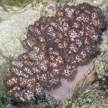 Some colonies are mushroom-shaped with a stem beneath a broad top. Pulau Tekukor, May 07 |
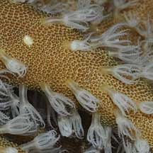 Different kinds of polyps: Smaller siphonozooids with larger, taller autozooids. Pulau Hantu, Apr 09 |
| When the colony is out of water, the autozooid polyps are usually
retracted completely into the common tissue so that the entire colony
appears smooth and leathery. The common tissue might also contract, but
the entire colony cannot disappear into a crevice like some large
anemones do. The entire colony is quite stiff and hard, and is not soft and flexible. Do not bend leathery corals or handle them roughly. Some may tear, while others contain dangerous toxins. Like most other soft corals, tiny spikes of calcium carbonate, called sclerites, are embedded in the common tissue. These sclerites are used to identify these leathery soft coral species. Many species of leathery soft coral periodically shed their upper layer as a mucus layer or dead waxy layer to get rid of sediments, algae and other unwanted substances. Sometimes, very thin long 'strings' are seen emerging from leathery soft corals. These are likely the feeding tentacles of ctenophores, tiny animals that closely resemble the soft coral surface. |
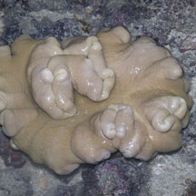 Colony can contract when out of water. St. John's Island, Aug 05 |
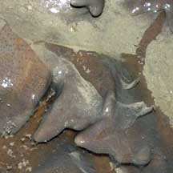 Shedding a layer of mucus. Pulau Hantu, Mar 07 |
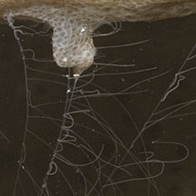 Stinging tentacles produced by ctenophores living on the leathery soft coral. Sentosa, Nov 11 |
Sinularia sp. have only autozooids and do not
have siphonozooids. A colony can take on a wide variety of shapes
and even the same species may have different forms. The centre part
of the colony can be tough and hard due to a dense mass of large sclerites. What do they eat? Leathery corals
harbour microscopic, single-celled symbiotic algae (zooxanthellae)
within their bodies. The algae undergo photosynthesis to produce food
from sunlight. The food produced is shared with the host, which in
return provides the algae with shelter and minerals. |
| Some Leathery soft corals on Singapore shores |
 Autozooids on long body column. |
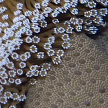 Has siphonozooids. |

 Autozooids on short body column. |
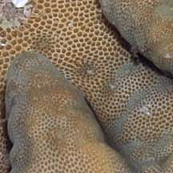 Has siphonozooids. |
|
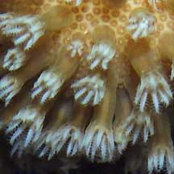 Autozooids on short body column. |
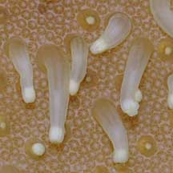 Has siphonozooids. |
|
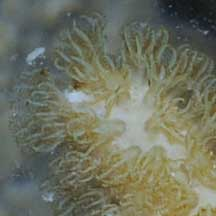 Autozooids on short body column. |
 No siphonozooids. |
|
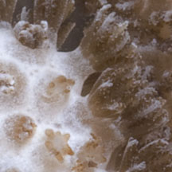 Autozooids on short body column. |
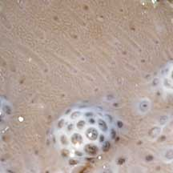 No siphonozooids. |
|
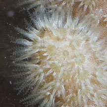 Autozooids very short body column, star-like. |
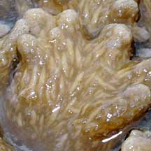 No siphonozooids. Spindle-shaped structures in common tissue. |
|
|
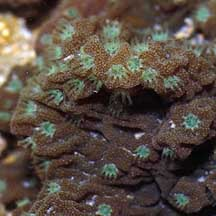 Autozooids very short body column, star-like. |
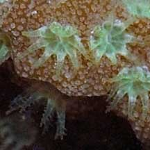 No siphonozooids. Prickly surface due to tiny spicules. |

*Species are difficult to positively identify without close examination.
On this website, they are grouped by external features for convenience of display.
| Order Alcyonacea recorded for Singapore text index and photo index of soft corals seen on Singapore shores from Checklist of Cnidaria (non-Sclerectinia) Species with their Category of Threat Status for Singapore by Yap Wei Liang Nicholas, Oh Ren Min, Iffah Iesa in G.W.H. Davidson, J.W.M. Gan, D. Huang, W.S. Hwang, S.K.Y. Lum, D.C.J. Yeo, May 2024. The Singapore Red Data Book: Threatened plants and animals of Singapore. 3rd edition. National Parks Board. 663 pp.
|
|
Links
References
|